- 계절차분먼저 > 일반차분
Install/Load packages
# 1. install/load packages
# install.packages('forecast')
# install.packages('tseries')
# install.packages('ggplot2')
# install.packages('reshape')
# install.packages('zoo')
# install.packages('fUnitRoots')
library(forecast)
library(tseries)
library(ggplot2)
library(reshape)
library(zoo)
library(fUnitRoots)#============================================================
# Data Load
# - 1949년 ~ 1960년 까지의 월별 비행기 탑승 고객 수
#============================================================
origin <- AirPassengers
origin| Jan | Feb | Mar | Apr | May | Jun | Jul | Aug | Sep | Oct | Nov | Dec | |
|---|---|---|---|---|---|---|---|---|---|---|---|---|
| 1949 | 112 | 118 | 132 | 129 | 121 | 135 | 148 | 148 | 136 | 119 | 104 | 118 |
| 1950 | 115 | 126 | 141 | 135 | 125 | 149 | 170 | 170 | 158 | 133 | 114 | 140 |
| 1951 | 145 | 150 | 178 | 163 | 172 | 178 | 199 | 199 | 184 | 162 | 146 | 166 |
| 1952 | 171 | 180 | 193 | 181 | 183 | 218 | 230 | 242 | 209 | 191 | 172 | 194 |
| 1953 | 196 | 196 | 236 | 235 | 229 | 243 | 264 | 272 | 237 | 211 | 180 | 201 |
| 1954 | 204 | 188 | 235 | 227 | 234 | 264 | 302 | 293 | 259 | 229 | 203 | 229 |
| 1955 | 242 | 233 | 267 | 269 | 270 | 315 | 364 | 347 | 312 | 274 | 237 | 278 |
| 1956 | 284 | 277 | 317 | 313 | 318 | 374 | 413 | 405 | 355 | 306 | 271 | 306 |
| 1957 | 315 | 301 | 356 | 348 | 355 | 422 | 465 | 467 | 404 | 347 | 305 | 336 |
| 1958 | 340 | 318 | 362 | 348 | 363 | 435 | 491 | 505 | 404 | 359 | 310 | 337 |
| 1959 | 360 | 342 | 406 | 396 | 420 | 472 | 548 | 559 | 463 | 407 | 362 | 405 |
| 1960 | 417 | 391 | 419 | 461 | 472 | 535 | 622 | 606 | 508 | 461 | 390 | 432 |
EDA
#============================================================
# EDA
#============================================================
# 시도표
plot(origin)
# 데이터에 이분산이 존재함을 확인일 수 있음
# 분산 안정화를 위한 데이터 변환 필요
#분산 안정화를 위한 BoxCox 변환
lambda <- BoxCox.lambda(origin)
tran_org <- BoxCox(origin, BoxCox.lambda(origin))
plot(tran_org)
# BoxCox 변환 이후 이분산의 효과가 줄어 든것을 확인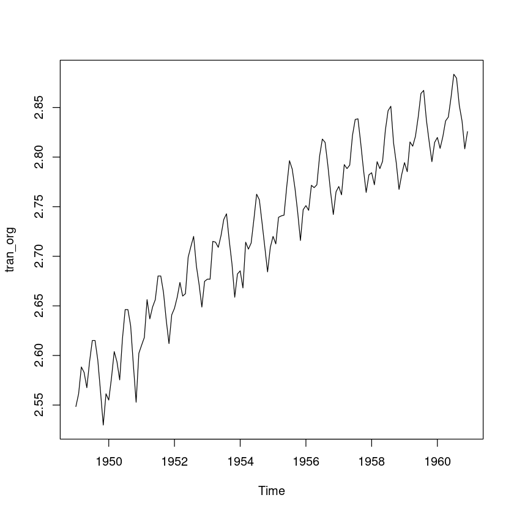
시계열 분해 및 회귀분석 이용 예측
#============================================================
# 시계열 분해 및 회귀분석 이용 예측
#============================================================
#분해법 : 가법모형
stl_tran_org <- stl(tran_org, s.window = 12)
plot(stl_tran_org)
# 1차 Trend와 Seasonality 존재
# 잔차는 White Noise로 판단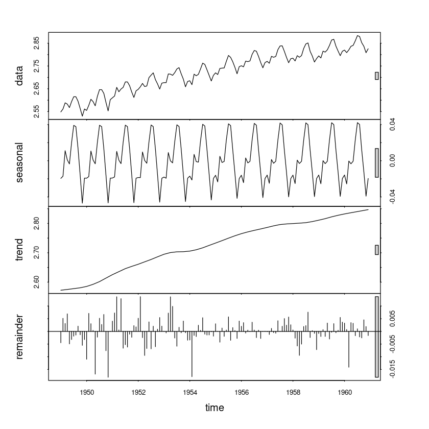
- 1
- 2
- 3
- 4
- 5
- 6
- 7
- 8
- 9
- 10
- 11
- 12
- 1
- 2
- 3
- 4
- 5
- 6
- 7
- 8
- 9
- 10
- 11
- 12
- 1
- 2
- 3
- 4
- 5
- 6
- 7
- 8
- 9
- 10
- 11
- 12
- 1
- 2
- 3
- 4
- 5
- 6
- 7
- 8
- 9
- 10
- 11
- 12
- 1
- 2
- 3
- 4
- 5
- 6
- 7
- 8
- 9
- 10
- 11
- 12
- 1
- 2
- 3
- 4
- 5
- 6
- 7
- 8
- 9
- 10
- 11
- 12
- 1
- 2
- 3
- 4
- 5
- 6
- 7
- 8
- 9
- 10
- 11
- 12
- 1
- 2
- 3
- 4
- 5
- 6
- 7
- 8
- 9
- 10
- 11
- 12
- 1
- 2
- 3
- 4
- 5
- 6
- 7
- 8
- 9
- 10
- 11
- 12
- 1
- 2
- 3
- 4
- 5
- 6
- 7
- 8
- 9
- 10
- 11
- 12
- 1
- 2
- 3
- 4
- 5
- 6
- 7
- 8
- 9
- 10
- 11
- 12
- 1
- 2
- 3
- 4
- 5
- 6
- 7
- 8
- 9
- 10
- 11
- 12
Levels:
- '1'
- '2'
- '3'
- '4'
- '5'
- '6'
- '7'
- '8'
- '9'
- '10'
- '11'
- '12'
| seasonal | trend | remainder | |
|---|---|---|---|
| <dbl> | <dbl> | <dbl> | |
| 1 | -0.0195009846 | 2.572470 | -0.004485195 |
| 2 | -0.0170966571 | 2.573324 | 0.005147320 |
| 3 | 0.0111248690 | 2.574178 | 0.003105273 |
| 4 | 0.0009896123 | 2.575032 | 0.006915958 |
| 5 | -0.0035318860 | 2.575972 | -0.004933871 |
| 6 | 0.0200103731 | 2.576911 | -0.003201882 |
# 회귀 모형 생성
# 모형식 : tran_org=trend∗β1+M1∗d1+...+M12∗d12+ϵ
# 가변수를 회귀모형에 넣을 때는 절편을 포함하는 것과 포함하지 않는 것에 대한 회귀계수 의미가 달라짐을 유의
model_stl <- lm(formula = tran_org~0+ stl_tran_org_df$trend+M, na.action = NULL)
summary(model_stl)
Call:
lm(formula = tran_org ~ 0 + stl_tran_org_df$trend + M, na.action = NULL)
Residuals:
Min 1Q Median 3Q Max
-0.0208982 -0.0030056 0.0003675 0.0032375 0.0186285
Coefficients:
Estimate Std. Error t value Pr(>|t|)
stl_tran_org_df$trend 1.003132 0.006557 152.982 < 2e-16 ***
M1 -0.025890 0.017899 -1.446 0.15043
M2 -0.029141 0.017911 -1.627 0.10614
M3 -0.002850 0.017923 -0.159 0.87389
M4 -0.009503 0.017936 -0.530 0.59713
M5 -0.010617 0.017948 -0.592 0.55519
M6 0.012901 0.017961 0.718 0.47386
M7 0.032071 0.017974 1.784 0.07669 .
M8 0.030402 0.017986 1.690 0.09335 .
M9 0.004045 0.017998 0.225 0.82255
M10 -0.023032 0.018011 -1.279 0.20322
M11 -0.052048 0.018023 -2.888 0.00454 **
M12 -0.028326 0.018036 -1.571 0.11870
---
Signif. codes: 0 ‘***’ 0.001 ‘**’ 0.01 ‘*’ 0.05 ‘.’ 0.1 ‘ ’ 1
Residual standard error: 0.006548 on 131 degrees of freedom
Multiple R-squared: 1, Adjusted R-squared: 1
F-statistic: 1.92e+06 on 13 and 131 DF, p-value: < 2.2e-16par(mfrow=c(1,2))
# Hist Plot
hist(resid(model_stl),prob=TRUE,12, main = "Histogram of residuals")
lines(density(resid(model_stl)), col='red', lwd=2)
# Q-Q PLOT
qqnorm(resid(model_stl))
qqline(resid(model_stl))
par(mfrow=c(1,1))
# Q-Q Plot과 Histogram을 확인하면 양쪽 끝이 두텁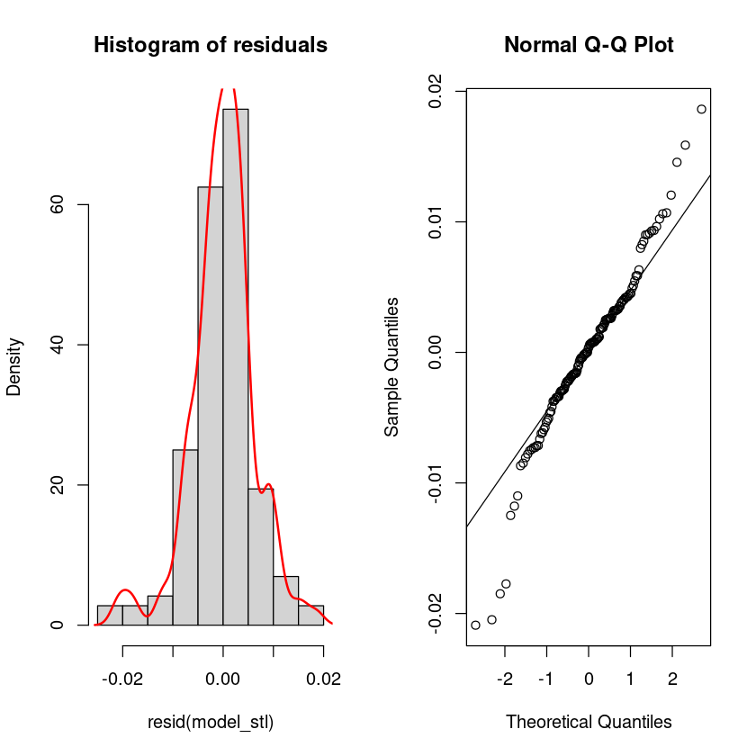
# 잔차들간의 상관관계가 존재하는가에 대한 가설 검정 : DW test
library(lmtest)
dwtest(model_stl) #가설검정 결과 잔차들간의 1차 상관관계가 존재 : White noise 라고 할 수 없음.
Durbin-Watson test
data: model_stl
DW = 1.4677, p-value = 0.001001
alternative hypothesis: true autocorrelation is greater than 0# 회귀모형 예측 결과 확인
plot(spline(time(origin), origin),type='l',xlab='Time',ylab='Pop')
# 원 데이터 및 fitted 데이터의 비교
# BoxCox 역변환 필요 함
lines(InvBoxCox(model_stl$fitted.values, lambda = BoxCox.lambda(origin)), col='red')
mean((origin - InvBoxCox(model_stl$fitted.values, lambda = BoxCox.lambda(origin)))^2, na.rm = TRUE) #MSE
81.1421060592885
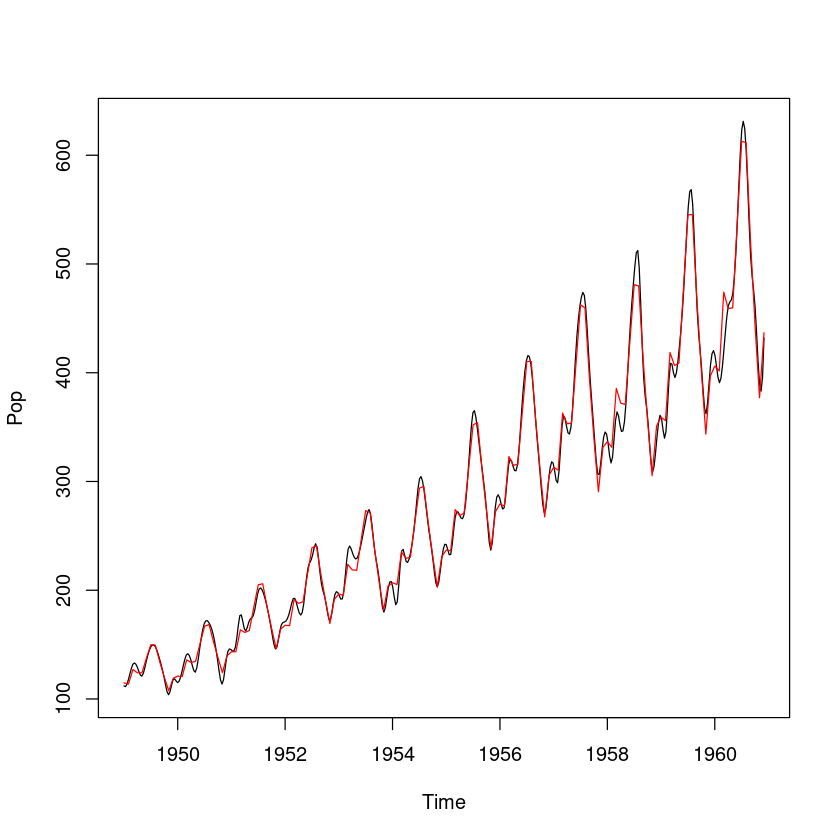
# 다른방법의 회귀모형(이건 수업 시간에 안해도 될 거 같음)
t <- 1:length(origin)
model_t <- lm(formula = tran_org~ t +M, na.action = NULL)
summary(model_t)
# model_stl 에서는 trend에 해당하는 회귀계수가 1에 가까웠는데,
# model_t에서는 t 에 해당하는 회귀계수가 2.563 으로 trend값과 거의 유사하다.
# 이렇게 시계열 모형을 적합할 때 회귀모형을 적합해도 되지만,
# 이 경우 회귀모형에서의 모형 가정이 깨지게 되며 (오차의 독립성)
# 최소제곱합에 의해 구해진 회귀계수의 추정량이 더이상 베스트가 아니게 된다. (분산이 커질 수 있음)
# 따라서 시계열 데이터에 대해 회귀모형으로 적합하는 것은 적절하지 않음.
Call:
lm(formula = tran_org ~ t + M, na.action = NULL)
Residuals:
Min 1Q Median 3Q Max
-0.036966 -0.012087 0.002366 0.012002 0.030970
Coefficients:
Estimate Std. Error t value Pr(>|t|)
(Intercept) 2.563e+00 4.718e-03 543.342 < 2e-16 ***
t 1.992e-03 2.979e-05 66.862 < 2e-16 ***
M2 -3.329e-03 6.046e-03 -0.551 0.582797
M3 2.288e-02 6.046e-03 3.785 0.000233 ***
M4 1.615e-02 6.046e-03 2.672 0.008510 **
M5 1.499e-02 6.047e-03 2.478 0.014474 *
M6 3.845e-02 6.048e-03 6.358 3.13e-09 ***
M7 5.757e-02 6.048e-03 9.518 < 2e-16 ***
M8 5.581e-02 6.049e-03 9.226 6.29e-16 ***
M9 2.937e-02 6.050e-03 4.854 3.38e-06 ***
M10 2.206e-03 6.052e-03 0.365 0.716031
M11 -2.687e-02 6.053e-03 -4.440 1.89e-05 ***
M12 -3.217e-03 6.055e-03 -0.531 0.596147
---
Signif. codes: 0 ‘***’ 0.001 ‘**’ 0.01 ‘*’ 0.05 ‘.’ 0.1 ‘ ’ 1
Residual standard error: 0.01481 on 131 degrees of freedom
Multiple R-squared: 0.9738, Adjusted R-squared: 0.9714
F-statistic: 405.6 on 12 and 131 DF, p-value: < 2.2e-16#============================================================
# 지수평활을 이용한 예측
#============================================================
plot(stl(origin, s.window=12))
# Trend 및 Seasonality 존재
# Holt-Winter 지수평활 모형이 적합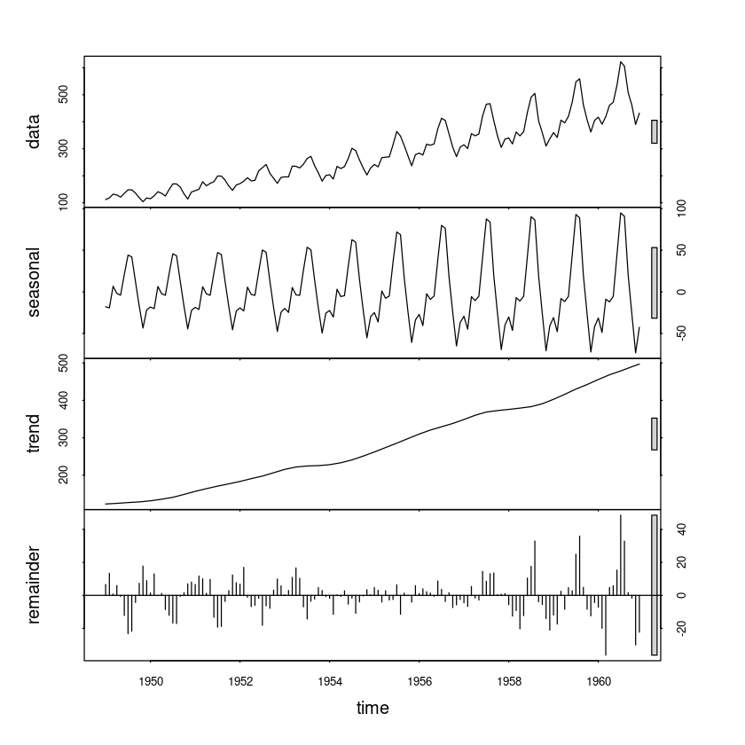
#HoltWinters 모형 생성
model_es <- HoltWinters(origin, seasonal = "multiplicative") #이분산성이 존재하기 때문에 승법모형을 적용해야 함.
#model_es <- HoltWinters(origin, beta=F, gamma=F, seasonal = "multiplicative") #단순지수 평활 모형을 사용하고 싶다면, beta=F, gamma=F 추가.
#model_es <- HoltWinters(origin, gamma=F, seasonal = "multiplicative") #이중지수 평활 모형을 사용하고 싶다면, gamma=F 추가.# 원 데이터 및 fitted 데이터의 비교
# plot
plot(spline(time(origin), origin),type='l',xlab='Time',ylab='Pop')
lines(model_es$fitted[,1], col='red')
# mse 125.5
mean((origin-model_es$fitted[,1])^2)
125.536195962121
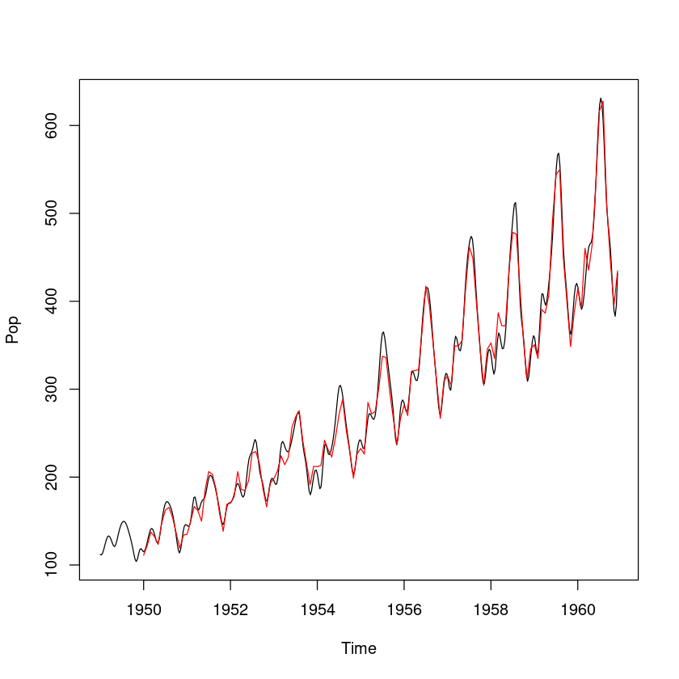
# 이동평균법 사용 방법
plot(origin)
library(TTR) #이동평균 SMA 함수 사용하기 위한 패키지 불러오기
originSMA3 <- SMA(origin,n=3) #window=3
originSMA3
lines(originSMA3, col='darkorange', lty=2, lwd=2)
originSMA8 <- SMA(origin,n=8) #window=8
lines(originSMA8, col='steelblue', lty=4, lwd=2)
originSMA12 <- SMA(origin,n=12) #window=12
lines(originSMA12, col='darkgreen', lty=2, lwd=2)
legend("topleft", c("m=3", "m=8", "m=12"), col=c("darkorange", "steelblue","darkgreen"), lty=c(2,4,2), lwd=2)| Jan | Feb | Mar | Apr | May | Jun | Jul | Aug | Sep | Oct | Nov | Dec | |
|---|---|---|---|---|---|---|---|---|---|---|---|---|
| 1949 | NA | NA | 120.6667 | 126.3333 | 127.3333 | 128.3333 | 134.6667 | 143.6667 | 144.0000 | 134.3333 | 119.6667 | 113.6667 |
| 1950 | 112.3333 | 119.6667 | 127.3333 | 134.0000 | 133.6667 | 136.3333 | 148.0000 | 163.0000 | 166.0000 | 153.6667 | 135.0000 | 129.0000 |
| 1951 | 133.0000 | 145.0000 | 157.6667 | 163.6667 | 171.0000 | 171.0000 | 183.0000 | 192.0000 | 194.0000 | 181.6667 | 164.0000 | 158.0000 |
| 1952 | 161.0000 | 172.3333 | 181.3333 | 184.6667 | 185.6667 | 194.0000 | 210.3333 | 230.0000 | 227.0000 | 214.0000 | 190.6667 | 185.6667 |
| 1953 | 187.3333 | 195.3333 | 209.3333 | 222.3333 | 233.3333 | 235.6667 | 245.3333 | 259.6667 | 257.6667 | 240.0000 | 209.3333 | 197.3333 |
| 1954 | 195.0000 | 197.6667 | 209.0000 | 216.6667 | 232.0000 | 241.6667 | 266.6667 | 286.3333 | 284.6667 | 260.3333 | 230.3333 | 220.3333 |
| 1955 | 224.6667 | 234.6667 | 247.3333 | 256.3333 | 268.6667 | 284.6667 | 316.3333 | 342.0000 | 341.0000 | 311.0000 | 274.3333 | 263.0000 |
| 1956 | 266.3333 | 279.6667 | 292.6667 | 302.3333 | 316.0000 | 335.0000 | 368.3333 | 397.3333 | 391.0000 | 355.3333 | 310.6667 | 294.3333 |
| 1957 | 297.3333 | 307.3333 | 324.0000 | 335.0000 | 353.0000 | 375.0000 | 414.0000 | 451.3333 | 445.3333 | 406.0000 | 352.0000 | 329.3333 |
| 1958 | 327.0000 | 331.3333 | 340.0000 | 342.6667 | 357.6667 | 382.0000 | 429.6667 | 477.0000 | 466.6667 | 422.6667 | 357.6667 | 335.3333 |
| 1959 | 335.6667 | 346.3333 | 369.3333 | 381.3333 | 407.3333 | 429.3333 | 480.0000 | 526.3333 | 523.3333 | 476.3333 | 410.6667 | 391.3333 |
| 1960 | 394.6667 | 404.3333 | 409.0000 | 423.6667 | 450.6667 | 489.3333 | 543.0000 | 587.6667 | 578.6667 | 525.0000 | 453.0000 | 427.6667 |
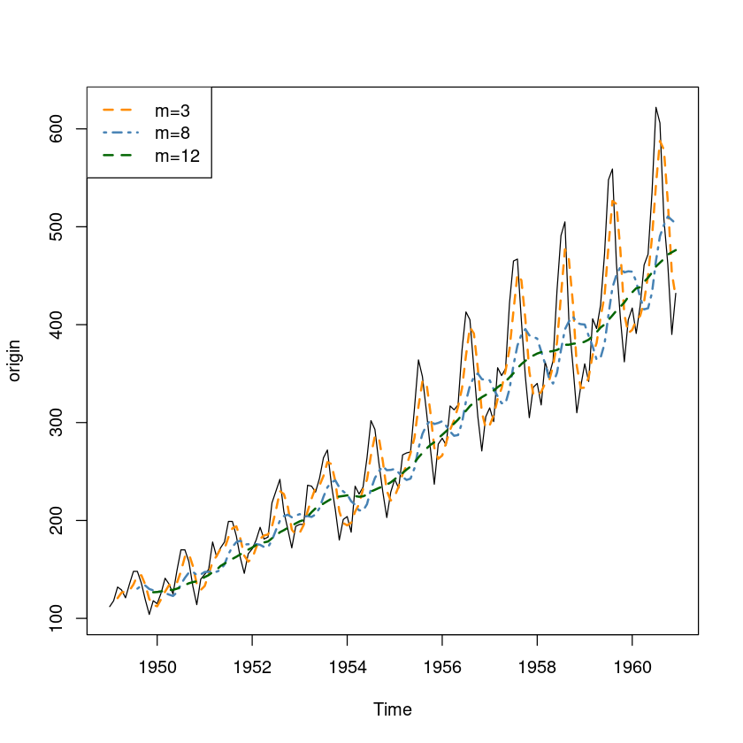
ARIMA를 이용한 예측
#============================================================
# ARIMA를 이용한 예측
#============================================================
# 데이터 탐색 및 모형식별
# 시도표
plot(origin)
# 데이터의 이분산과 1차 추세, 계정성분이 존재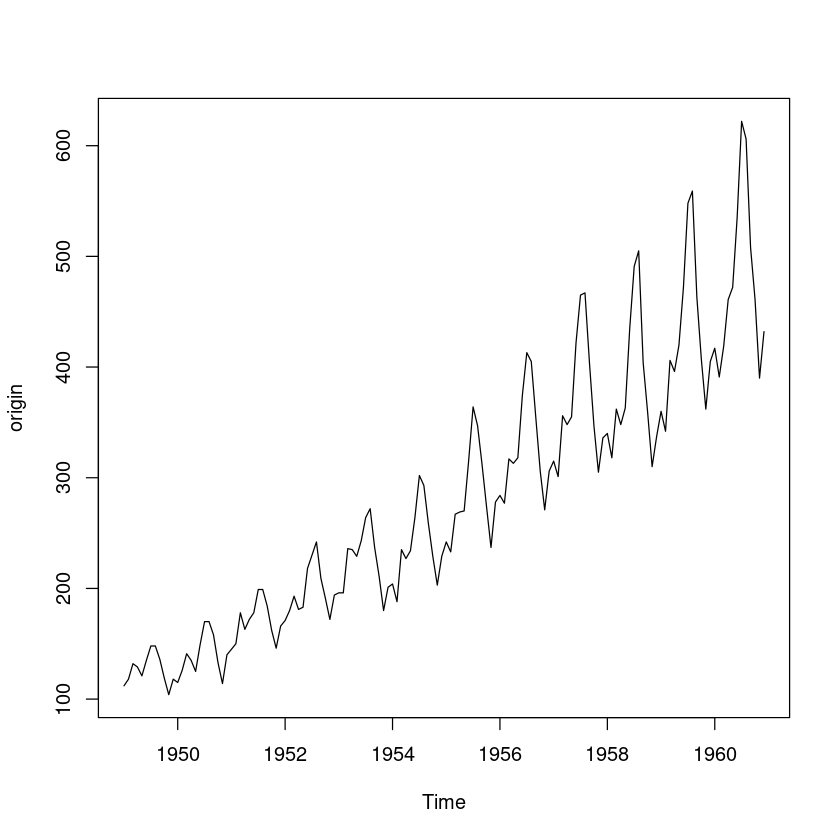
# 우선 분산 안정화를 위한 Box Cox 변환
# 분산 안정화
tran_org <- BoxCox(origin, BoxCox.lambda(origin))
plot(tran_org)
# plot(log(tran_org))
#일반적으로 로그변환이 더 쉽기 때문에 로그변환을 훨씬 많이 사용
#이 정도면 로그변환 해도 되지만, Boxcox 변환이 아무래도 더 정확하니 Boxcox 사용
# ACF, PACF를 통한 탐색
layout(1:2)
acf(tran_sdiff_org, lag.max = 100) #ACF 값이 아주 천천히 감소하고 있으므로 차분이 필요함
pacf(tran_sdiff_org, lag.max= 100)
# 차분이 필요한지 검정 : 단위근 검정 H0 : 단위근이 있다.(즉 차분이 필요하다)
library(fUnitRoots) # library for function adfTest
adfTest(tran_sdiff_org, lags = 1, type = "c")
#유의수준 5%에서는 기각할 수 있지만, 유의수준 1%에서는 기각할 수 없음.
#ACF 값이 아주 천천히 감소하고 있기 때문에 차분을 하는 것이 좋다고 판단
Title:
Augmented Dickey-Fuller Test
Test Results:
PARAMETER:
Lag Order: 1
STATISTIC:
Dickey-Fuller: -3.0987
P VALUE:
0.0309
Description:
Thu Jun 15 23:56:28 2023 by user: # 차분 실행
tran_sdiff_diff_org <- diff(tran_sdiff_org, lag=1)
par(mfrow=c(1,1))
plot(tran_sdiff_diff_org)
abline(h=0, lty=2)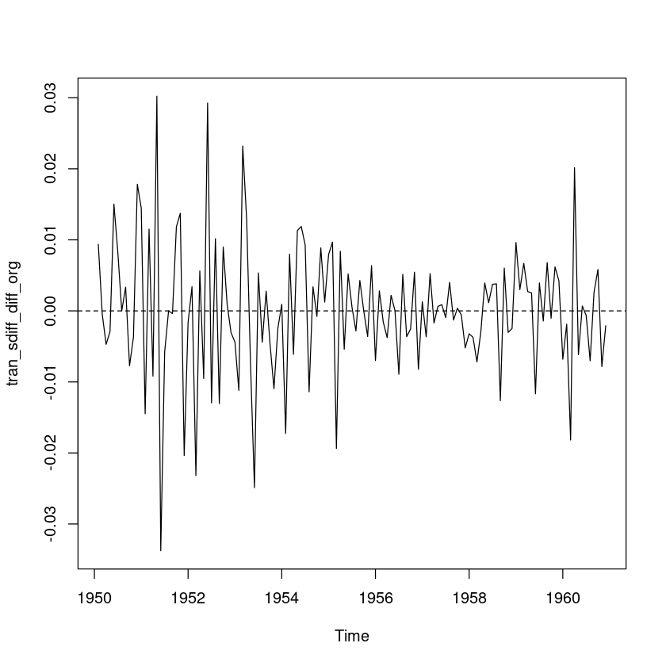
tran_sdiff_diff_org <- diff(diff(tran_org), lag=12)
# tran_sdiff_diff_org
layout(1:2)
acf(tran_sdiff_diff_org, lag.max = 48)
# acf는 lag=1,3,12에서 0이 아닌값 가짐 비계절 시차 4부터 절단 -> MA(3), 계절 -> 시차 2부터 절단 SMA(1)
pacf(tran_sdiff_diff_org, lag.max = 48)
# 시차 1와 9에서 0보다 큰 값을 가짐 -> AR(3), 계절 : 시차2부터 절단 -> SAR(1)
# 정확한 모형을 찾기 위해
# auto.arima를 통해 aic가 최소가 되는 order 값 구함
# 이론적으로는 ACF/PACF 그림을 보고 차수를 결정할 수 있다고는 하지만
# 실제 데이터 분석에서는 그림을 보고 결정하는 것은 어렵다.
# 참고 정도로 사용할 수 있음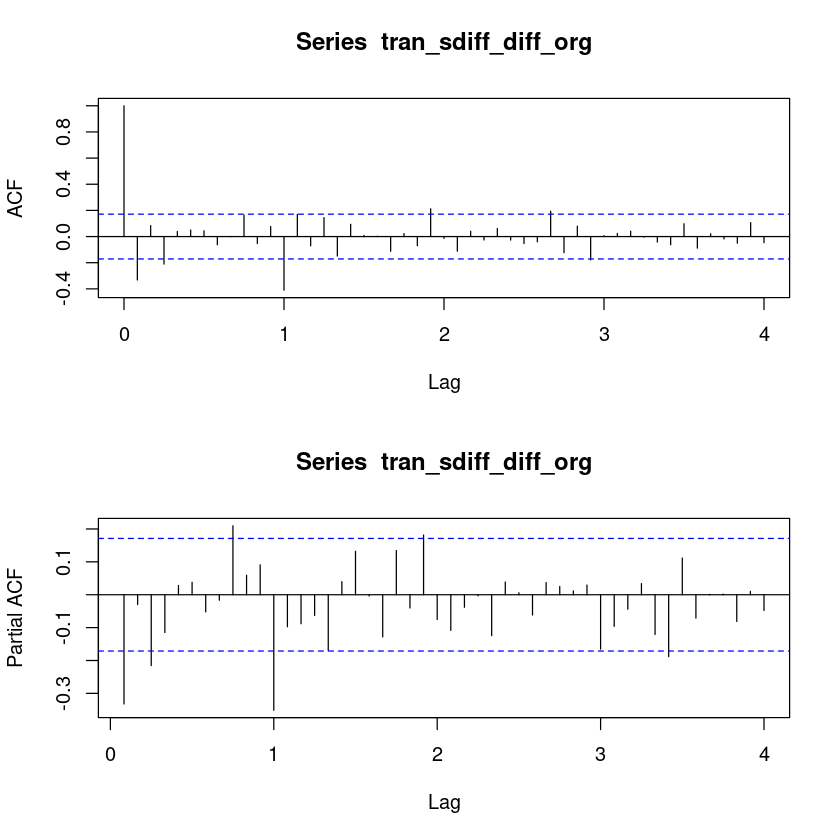
auto.arima(tran_sdiff_diff_org, max.p = 3, max.q=3, max.Q=1, trace = T) #trace = T 옵션을 사용하면 모형 선택 과정 확인 가능
auto.arima(tran_org, max.p = 3, max.q=3, max.Q=1, trace = T)
# 두 개 모형의 MA, SMA 계수의 추정값이 동일
# 모형 구축
ARIMA(2,0,2)(1,0,1)[12] with non-zero mean : -888.1739
ARIMA(0,0,0) with non-zero mean : -843.0306
ARIMA(1,0,0)(1,0,0)[12] with non-zero mean : -883.5747
ARIMA(0,0,1)(0,0,1)[12] with non-zero mean : -895.1215
ARIMA(0,0,0) with zero mean : -845.0917
ARIMA(0,0,1) with non-zero mean : -858.0611
ARIMA(0,0,1)(1,0,1)[12] with non-zero mean : -893.3952
ARIMA(0,0,1)(1,0,0)[12] with non-zero mean : -887.4301
ARIMA(0,0,0)(0,0,1)[12] with non-zero mean : -878.063
ARIMA(1,0,1)(0,0,1)[12] with non-zero mean : -894.3536
ARIMA(0,0,2)(0,0,1)[12] with non-zero mean : -893.8846
ARIMA(1,0,0)(0,0,1)[12] with non-zero mean : -891.2874
ARIMA(1,0,2)(0,0,1)[12] with non-zero mean : Inf
ARIMA(0,0,1)(0,0,1)[12] with zero mean : -896.9867
ARIMA(0,0,1) with zero mean : -860.1546
ARIMA(0,0,1)(1,0,1)[12] with zero mean : -895.2889
ARIMA(0,0,1)(1,0,0)[12] with zero mean : -889.5278
ARIMA(0,0,0)(0,0,1)[12] with zero mean : -880.0671
ARIMA(1,0,1)(0,0,1)[12] with zero mean : -896.0985
ARIMA(0,0,2)(0,0,1)[12] with zero mean : -895.6939
ARIMA(1,0,0)(0,0,1)[12] with zero mean : -893.2741
ARIMA(1,0,2)(0,0,1)[12] with zero mean : -894.0787
Best model: ARIMA(0,0,1)(0,0,1)[12] with zero mean
Series: tran_sdiff_diff_org
ARIMA(0,0,1)(0,0,1)[12] with zero mean
Coefficients:
ma1 sma1
-0.4355 -0.5847
s.e. 0.0908 0.0725
sigma^2 = 5.789e-05: log likelihood = 451.59
AIC=-897.18 AICc=-896.99 BIC=-888.55
ARIMA(2,1,2)(1,1,1)[12] : -890.0671
ARIMA(0,1,0)(0,1,0)[12] : -845.0917
ARIMA(1,1,0)(1,1,0)[12] : -885.7089
ARIMA(0,1,1)(0,1,1)[12] : -897.0051
ARIMA(0,1,1)(0,1,0)[12] : -860.1577
ARIMA(0,1,1)(1,1,1)[12] : -895.3093
ARIMA(0,1,1)(1,1,0)[12] : -889.5481
ARIMA(0,1,0)(0,1,1)[12] : -880.0835
ARIMA(1,1,1)(0,1,1)[12] : -896.1181
ARIMA(0,1,2)(0,1,1)[12] : -895.713
ARIMA(1,1,0)(0,1,1)[12] : -893.2917
ARIMA(1,1,2)(0,1,1)[12] : -894.0985
Best model: ARIMA(0,1,1)(0,1,1)[12]
Series: tran_org
ARIMA(0,1,1)(0,1,1)[12]
Coefficients:
ma1 sma1
-0.4355 -0.5847
s.e. 0.0908 0.0725
sigma^2 = 5.855e-05: log likelihood = 451.6
AIC=-897.19 AICc=-897.01 BIC=-888.57# 독립성 검정
Box.test(model_arima$residuals, lag=1, type="Ljung-Box") #H0 : rho1 = 0
Box.test(model_arima$residuals, lag=5, type="Ljung-Box") #H0 : rho1 = ... = rho5 = 0
Box.test(model_arima$residuals, lag=10, type="Ljung-Box") #H0 : rho1 = ... = rho10 = 0
# 잔차의 독립성, 등분산성, 정규성 만족
Box-Ljung test
data: model_arima$residuals
X-squared = 0.15595, df = 1, p-value = 0.6929
Box-Ljung test
data: model_arima$residuals
X-squared = 6.472, df = 5, p-value = 0.263
Box-Ljung test
data: model_arima$residuals
X-squared = 10.621, df = 10, p-value = 0.3878# 원 데이터 및 fitted 데이터의 비교
par(mfrow=c(1,1))
plot(spline(time(origin), origin),type='l',xlab='Time',ylab='Pop')
lines(InvBoxCox(fitted(model_arima), BoxCox.lambda(origin)), col='red') #역변환 필요
mean((origin - InvBoxCox(fitted(model_arima), BoxCox.lambda(origin)))^2) #MSE
107.241415231708
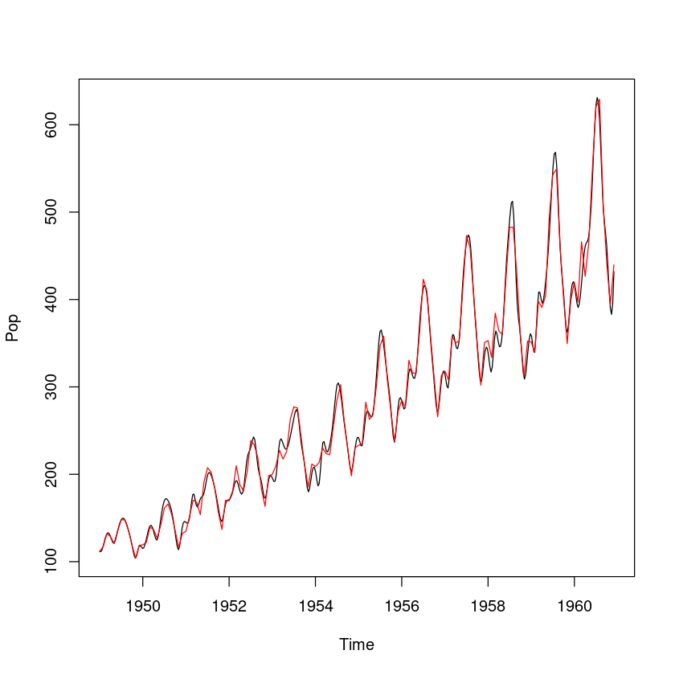
# 12개월 예측
arima_fit <- predict(model_arima, n.ahead=12) #BoxCox 변환 데이터 사용
lambda <- BoxCox.lambda(origin)
ts.plot(origin, xlim=c(1950,1965), ylim = c(0, 1000))
lines(InvBoxCox(arima_fit$pred, lambda),col="red")
lines(InvBoxCox(arima_fit$pred+1.96*arima_fit$se, lambda),col="blue",lty=1)
lines(InvBoxCox(arima_fit$pred-1.96*arima_fit$se, lambda),col="blue",lty=1)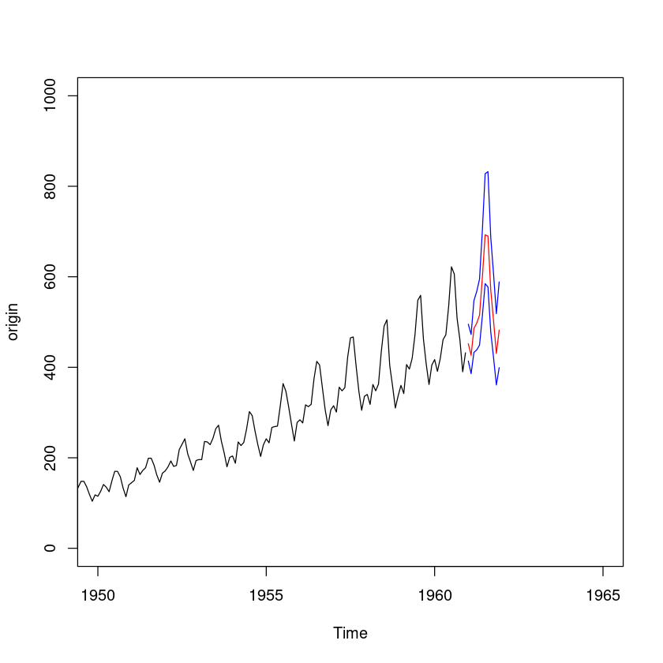